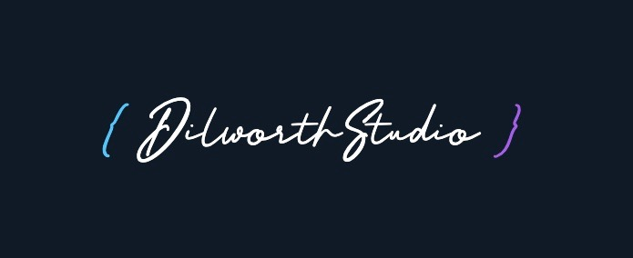
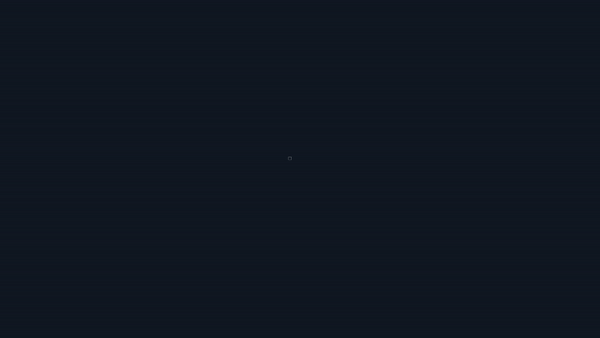
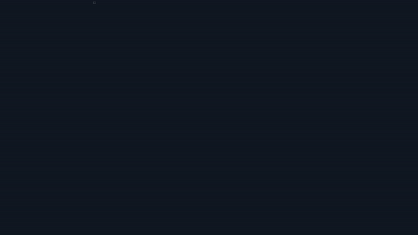
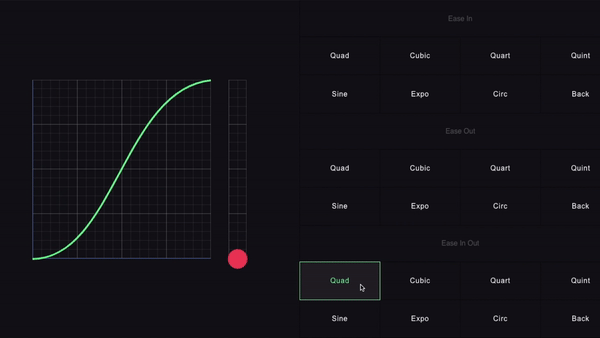
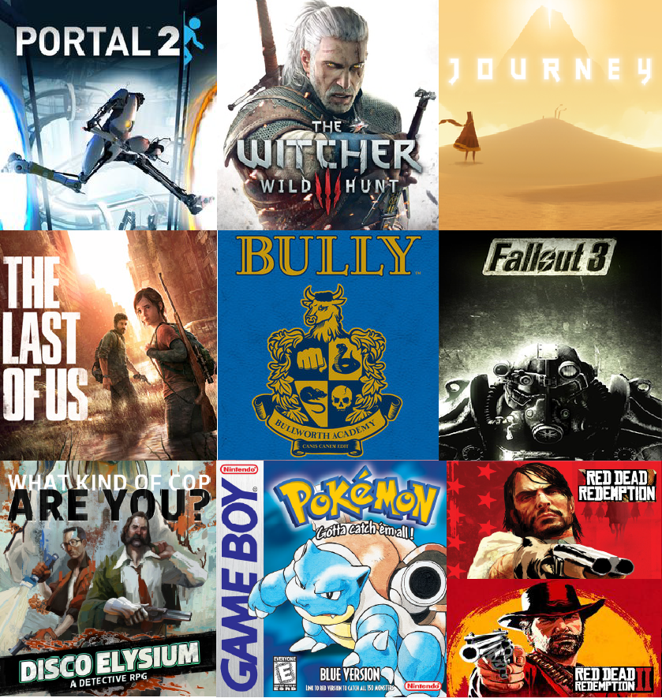

i'm doing a thing on youtube
Jan 15, 2022
Last week, I launched my channel on YouTube, Dilworth Studio. Originally
inspired by Grant Sanderson and 3Blue1Brown, the goal of the channel is using animated visuals
to convey ideas about a variety of topics such as programming, data structures, and algorithms.

Creating the visuals wasn't exactly a simple process at first. I spent many months developing special software tools to help speed up the workflow. I plan
to use this blog to start a series of posts documenting the process I went through, and provide behind the scenes looks into how I make the videos.
I will also explain the thought process behind choosing to develop my own tools instead of using established animation software, such as Adobe After Effects.
Eventually, I plan on making the tools I built open source, as well as discussing them in detail on this blog. In this post, I want to talk a little bit about
anime, which is the animation engine the tools are built on top of.
A second animation library called greensock is used for only one specific feature that it provides. Which is setting the
transform origin of an object to the center. Greensock is able to achieve this with just one simple line of code:
This allows objects to be animated easily from their center like this:

Instead of like this:

But this is all greensock is used for in the tools. The rest of the animation seen on the channel is powered by anime. There are pros and cons to both anime and
greensock, but ultimately, I settled on anime for its accessibility, great documentation, and file size. The entire library is only 18kb when minified.
There is also a wide selection of animation easing functions that are included with the base library.

This is unlike greensock, which requires a separate module for easing.
top 9 favorite video games of all time
Oct 26, 2021
Recently, I watched youtuber jacksepticeye discuss his 9 favorite video games of all time in this video. I
thought I would take a nostalgic trip down memory lane to reminisce on the games that have stuck with me in some way or another over the years. These are 9
beautiful collections of pixels that each hold a special place in my heart.

Portal 2 (2011)
Portal 2 was the first game that I played on the Xbox 360 back in May 2011. In my opinion, it is a shining example of how to do a sequel
right. It built on what made the first Portal great. Innovative gameplay mechanics, brilliantly written new characters, and incredible level
design. Sprinkled on top are some amazing sound effects that blew me away when I decided to play the game with headphones on one day. Over the
years, I’ve tried to find a flaw in Portal 2, but I literally cannot think of a single one.
The Witcher 3 (2015)
I was never a fan of the fantasy genre in any medium. Games, movies, television, or books. It was never my cup of tea. The Witcher 3 changed that.
Regarded by many to be the game that proved you could give players freedom in a large open world, while at the same time, telling good stories with
interesting characters. In my opinion, to this day, Witcher 3 still remains the high standard to which all other open world RPGs are held (in terms
of writing). Also, I'm addicted to Gwent.
Journey (2012)
The first game that I played on the Playstation 3. Journey is something special. Something different. Not a single word is spoken in the entire game.
But it all still works. It is one of those games you have to experience for yourself. Twenty twelve was a difficult year. I remember feeling lost, like
many of us do sometimes. Journey reminded me that life isn't about the destination, but the journey (please excuse the awful joke). And all of the amazing
people you can meet along the way that make life worth living.
The Last of Us (2013)
This was the year when games began to rise to the level of Hollywood films in terms of rich thematic storytelling and complex characters. Now, almost a decade
later, The Last of Us is about to come to HBO. The first video game in history to transcend into the world of television on the legendary platform that is HBO.
Filled with unforgettable moments, the story of the Last of Us is one that I hope as many people as possible get to experience. Joel and Ellie will forever live
rent free inside of my head.
Bully (2006)
Bully released during a very relevant time in my life, given what the game is about. As a confused teenager in high school, I could relate to Jimmy Hopkins as he
navigated the social landscape of Bullworth Academy. As someone who was picked on and bullied myself, this game still resonates with me 15 years later. I remember
one particular weekend not long after the game launched. I literally stayed up for 24 hours straight playing the game non-stop. I was obsessed.
Fallout 3 (2008)
As the final year of high school came to a close, everyone was busy preparing for college. I was playing Fallout 3. I'll never forget the moment that I stepped out of
Vault 101 and into the Capital Wasteland for the first time. My jaw dropped upon realizing how massive this game was going to be. It was very exciting. What followed over
the next couple of years was countless hours of exploring the ruins of Washington DC, and my hometown of Northern Virginia.
Disco Elysium (2019)
The most recent game on this list in terms of the date it was released. Disco Elysium came out exactly two years ago this month. It is easily the most creative and out of
the box game I have played since the original Portal. This is the closest I've ever seen a video game get to the feeling of an actual tabletop role-playing experience. I cannot
wait to see what ZA/UM follows this game up with next. The world of Elysium is one that I need to see more of in the future.
Pokemon Blue (1998)
I could not decide if I wanted to include this one in my list, but ultimately, I had to. This was the first video game I ever bought at 8 years old. I love Pokemon. I still remember
what the cashier at Toys R Us said to me after I paid for it. She said, "Here you go shorty, have fun", as she handed me the bag with the game inside it. That fact is completely random
and useless, but for some reason, it has stuck with me all these years. I have no idea why.
Red Dead Redemption I and II (2010 and 2018)
Okay, so I'm cheating a little bit here by including two games, but I consider these masterpieces to be one big story. Red Dead Redemption II feels incomplete without the first game and vice versa.
I can say with absolute certainty that Red Dead Redemption II is my favorite video game of all time.
I came to know and love each member of the Van Der Linde gang like they were members of my own family. Never have I been so invested in a group of fictional characters. It is a beautiful story
about love, loss, and regret. Dwelling on the past is something I can relate to. Red Dead Redemption II taught me that it is never too late in life to try and achieve something.
You cannot change the past. All you can do is move forward and try to be the best person that you can be. You can move forward and try to put as much good into the world as you can with the time that you
have left.
Thank you Arthur Morgan. Thank you Rockstar Games.
About
Hello and welcome!
My name is Nick. I enjoy the outdoors, traveling, writing, music, and making things. Here you will find my
random musings on software development, programming, game development, mathematics, technology, art, and
anything else I'm interested in.
Thanks for reading!